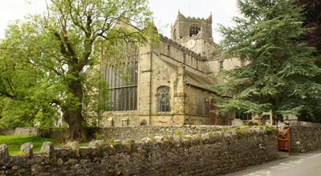
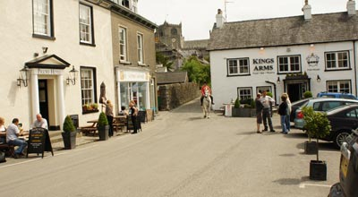
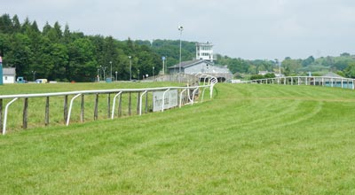
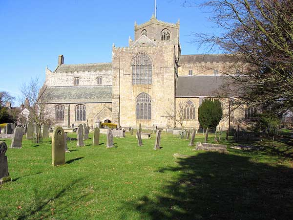

Cartmel Tourist Information
{kind=link}
Cartmel is a centuries old unspoilt village in an area recognised as one of Outstanding Natural Beauty. From here, walkers, ramblers, cyclists and countryside lovers are soon in landscapes of wonderful views to the not too distant fells of the Lake District and the sands and waters of Morecambe Bay on the edge of the Furness Peninsula. A beautiful 12th C Priory overlooks the village. It's magnificent stained glass windows, modern day sculptures including a work by Josephina de Vasconcellos, and ancient choir stalls are some of the major visitor attractions to this area of the Cartmel Peninsula. It's not just the peace, tranquillity and historical interest which draw visitors to this, one of the oldest villages in the Lake District. Here, only a short walk from the village shops and eating places is the smallest National Hunt Racecourse in Britain whose Spring and Summer steeple chase meetings attract large crowds from countrywide. These are entertaining days when the village of Cartmel is full to bursting and the excitement of the racing together with refreshment tents, stalls and a fairground create a carnival atmosphere which the whole family can enjoy. How to get there: By rail: From the West Coast Main Line, change at Carnforth for Grange-over-Sands or Cark on the Cumbrian Coastline. From there the journey by road is approximately two miles. By road: Reach us from J36 on the M6 along the A590 as far as High Newton. From there it is but a short drive along the signposted narrow roads to the village. |
 |
 |
 |
{kind=link}
Cartmel Shops and Amenities |
|
| Tourist Information Point Situated in Cartmel Village Car Park close to the racecourse. The office is manned 10am till 4pm on 7 days a week in the summer months and from 10am till 4pm on Friday, Saturday and Sunday during the winter. Telephone 015395 36340. www.cartmel-racecourse.co.uk |
Railway services The nearest railway station is Cark, on the Furness Line, two miles from Cartmel. No toilets. No waiting rooms. No ticket office (pay the conductor on the train) No ticket machine. Free parking of ten spaces. Cark railway station is convenient for visitors to Holker Hall half a mile away and the mid summer Cumbria Steam Gathering event in nearby Flookburgh. On race meeting days a bus service operates between the station and the racecourse. Priority is given to rail travellers so please keep your rail ticket as proof of travel. www.furnessline.co.uk |
| Bicycle Hire Hire for a full or half day from the Information Point in the car park. Hybrid bikes available. |
Public Toilets Situated in the Car Park. |
| Hairdresser/Barber Sweeny Bob's. A gent's barbers shop situated opposite the Priory, offering both traditional and modern styles. All age groups are welcome and an appointment is not required. Enjoy a cup of tea or coffee while you wait. Discount for senior citizens. Disabled facilities providing access for wheelchairs and mobility vehicles. Open Monday to Friday from 10am till 6pm and Saturday from 9am till 5pm. Telephone 015395 35586. |
Car Parking Situated next to Cartmel Racecourse. Cost £2 for 2 hours: £3 for 3 hours and £4 for all day. |
 |
Cartmel Attractions |
|
Cumbria Steam Gathering |
Horse racing These Spring and Summer Bank Holiday race meeting days always attract large crowds to enjoy the spirit of original steeplechases together with picnics and parties in one of the Lake District's most beautiful settings. www.cartmel-racecourse.co.uk |
| Cartmel Show This is an annual mid-summer traditional agricultural show held on the first Wednesday in August in the parkland setting of Cartmel Racecourse. A day of family entertainment where there's something for everyone. |
Unsworth's Yard Visit the yard for a range of shops selling wines, bread, cheeses, ceramics, home furnishings, antiques, clothing, traditional children's toys, meat, poultry and much more. Open 7 days from 9.30am till 5pm. |
| Cartmel Sticky Toffee Pudding The pudding can certainly be described as a Visitor Attraction. It's a moist sponge cake containing chopped dates covered in a toffee sauce and may be served with a vanilla custard or vanilla ice cream. Cartmel's Village Shop is one of the Lake District & Cumbria's best known producers. www.cartmelvillageshop.co.uk |
Black Horse Carriages Enjoy a horse drawn carriage ride around the village pulled by magnificent Friesian Horses. Ideal for weddings, picnic drives and all special occasions. Please note that this service is offered primarily on weekdays but there are special race day offers www.blackhorses.co.uk |
| Old Hall Farm at Bouth This is a traditional 19th C working farm providing a fascinating insight of working practices from a bygone era. Visitors can watch traditional milking demonstrations, see butter, cheese and fudge being made plus an opportunity to taste the finished products. Freshly baked cakes and refreshments are available in the Chicken Shed Tea Room. Open May to November www.oldhallfarmbouth.com |
Skydiving The excitement of freefall skydiving at Cumbria's only parachuting centre. www.skydivenorthwest.co.uk |
| Cartmel Priory The lovely 12th C church is the dominating presence of the village and is one of the top Lake District attractions. Inside, the visitor will find much to admire from beautiful stained glass windows, 15th C choir stalls and the more recent sculptures by the Brazilian artist, Josephina de Vasconcellos. The nearby Cartmel Priory Gatehouse is thought to be a 14th C construction and depicts the history of the village and the Priory. |
Cartmel Races This is National Hunt Racing at its very best and attracting thousands of enthusiastic visitors who flock to the gala atmosphere generated in one of the countrys smallest courses. They are one of the years highlights held during the Spring and Summer Bank Holidays. |
| Holker Hall In the 1990’s the gardens were voted in a well read magazine as one of the best in the world and certainly deserves the present day reputation of the finest house and gardens in the southern Lake District. The grounds cover an area of around 25 acres of formal gardens and woodlands containing café, restaurant, gift shop, adventure playground and picnic area. The Holker Garden Festival is a most popular event. www.holker-hall.co.uk |
Lakeland Motor Museum Here you will find a wide ranging display of classic cars, motor-cycles, tractors, engines and a collection of rare motoring memorabilia. It’s one of the best that the Lake District and Cumbria can offer. www.lakelandmotormuseum.co.uk |
| Aquarium of the Lakes The aquarium is conveniently placed close to the landing stage of Lakeside on Lake Windermere. It is an imaginative designed complex of themed habitats clearly showing the diversity of lake life and glass tunnels showing views of a cleverly recreated bed of Lake Windermere. www.aquariumofthelakes.co.uk |
Morecambe Bay It is an important wildlife habitat not far from the village of Cartmel. During migration and in the winter months it provides a feeding ground for waders and wildfowl and for the naturalists, good watching facilities are provided at Hest Bank and Leighton Moss. The Cross Bay Walk is a well known attraction carried out under the watchful eyes of an experienced qualified guide. Visitors are reminded that it would be extremely dangerous to attempt this alone due to quicksands and treacherous unpredictable tides. |
| The Predator Experience Based at Ayside, Cartmel offering one to one lessons flying birds of prey including Ben, a five year old Golden eagle. |
Lakeside and Haverthwaite Railway Take a trip from Lakeside to Haverthwaite and return on one of these trains hauled by lovingly restored steam locomotives. A delight for the enthusiast and a firm favourite with the children. www.furnessrailwaytrust.org.uk |
| Lake Windermere Probably the most visited stretch of water in the Lake District and Cumbria.Windermere is England’s largest lake and best viewed from one of the many passenger launches which regularly ply its length from Bowness to Waterhead (Ambleside) and Lakeside. Much to see and do in Bowness and a particularly pleasant walk along Cockshott Point which is push chair and wheelchair friendly. www.windermere-lakecruises.co.uk |
Stott Park Bobbin Mill Another important piece of Cumbria and the Lake District history. It details the thriving bobbin industry of the 1800’s when about 250 people were involved in the manufacture. Open March – October. Free guided tours. www.stottparkbobbinmill.co.uk |
Cartmel Kids Attractions |
|
| Lakeland Miniature Village This model village built from local Coniston slate has houses, including Beatrix Potters home, farms, barns and a Japanese Tea House. Situated only 5 minutes walk from Cark Railway Station and a couple of miles from Cartmel village. It's advisable to telephone before visiting to make sure it's open. 015395 58500. www.lakelandminiaturevillage.com |
Duck's Park Farm There's lots of fun here for the kids. They can meet and pet a wide variety of animals, try the Farm Trail and have a go on the trampoline and indoor play frame plus a separate area for toddlers. This is a friendly safe environment in which to learn about Lake District farming methods and have fun at the same time. Refreshments available on site and picnic areas. Visitors to Ducky's are also entitled to a discount voucher which can be used at the nearby “Yakkers”family friendly pub serving a tasty choice of homemade food and a selection of real ales www.duckysparkfarm.co.uk |
| Bigland Equestrian Here there's a variety of well mannered horses and ponies available for lessons to people of all ages. Indoor and outdoor schooling facilities. The horse and pony trekking for beginners only is a children’s favourite www.biglandhall.com |
|
Cartmel Sports and Pastimes |
|
| Fishing A beautiful eleven acre fishery suitable for all methods a few miles from Cartmel near Newby Bridge. It's open all year round daily from 8am until sunset. Day permits available. www.biglandtroutfishery.co.uk and www.lakedistrictfishing.net |
High Newton Trout Fishery This is one of the best Rainbow Trout fisheries in Cumbria. The reservoir, overlooking the Cartmel Valley and Morecambe Bay, is open all year round from one hour before sunrise to one hour after sunset. Wheelchair access can be arranged in advance www.lakedistrictfishing.net |
| Fishing Tackle Visit the Fishing Hut for a good range of fishing tackle. www.thefishinghut.co.uk |
Golf Three miles from Cartmel is the challenging18 hole parkland course at Grange-over-Sands. The greens are in excellent condition and are regarded as some of the best in Cumbria. The Club welcomes visitors who can enjoy the benefits of a fully catered clubhouse which provides tasty meals and snacks throughout the day with the added convenience of an on-line tee booking system www.grangegolfclub.co.uk |
| Horse Riding Riding lessons, pony trekking, fell rides and beach rides on Morecambe Bay. www.biglandhall.com |
Cartmel Cricket Club A summer afternoon for enthusiasts at a Cartmel home match. Visit the website for upcoming fixtures. www.pitchero.com/clubs/cartmelcricketclub |
| Walking The Lake District and Cumbria has been voted the walkers favourite UK destination. Here is a region where it is still possible to find and enjoy isolated areas in secluded landscapes. One gentle scenic walk begins from Catmel Racecourse. |
Bigland Outdoor There are many leisure pursuits in this area including angling, archery, clay shooting and quad biking. www.biglandoutdoordays.co.uk |
Cartmel Food and Drink |
|
| Cavendish Arms The Cavendish has been rated by “Visit Britain” as one of the Top Breakfast Destinations in the Lake District. This is a 450 year old coaching inn of low beamed ceilings and antique furniture. Visitors have a choice of British food using the best of local produce plus a selection of wines and traditional beers and ales. Cavendish Street. Cartmel. Phone: 015395 36240. |
The Kings Arms A selection of food and drink including a lunch menu for people who just want a quick meal with sandwiches, soup or seafood. There's also a three course dinner menu to suit all tastes. A full range of draught beers and lagers are always available. Opening times. Sunday to Thursday 10am till midnight and 10am till 1am on Friday and Saturday. The Square. Cartmel. Phone: 015395 33246. |
The Pig and Whistle |
The Royal Oak Traditional food, British and Italian cuisine together with a full range of cask ales, chilled beers from around the world plus a selection of wines and champagnes served all day every day from noon till 10pm in the village square. Log fire, barbecue and beer garden. All welcome including well behaved dogs. Phone: 015395 36259. |
| Harry's Cafe at Yew Tree Barn Coffee, tea's, soups, toasties, sandwiches, home baked cakes, sticky toffee pudding plus a choice of freshly cooked food. Open Monday to Saturday from 9am till 5pm and 10.30am till 4.30pm on Sundays, Bank Holidays and Easter Sunday. www.yewtreebarn.co.uk |
L'Enclume. ( “The Anvil”) Cartmel's Michelin starred restaurant crowned by The Good Food Guide, “Best Restaurant in UK 2014”. www.lenclume.co.uk/restaurant |
Mallard Tea Shop |
Food Market Day |
| Cartmel Village Shop Food gifts and picnic hampers prepared all year round. www.cartmelvillageshop.co.uk |
Cartmel Valley Game Suppliers & Smokehouse Licensed game dealer and producers of quality smoked salmon. www.distinctlycumbrian.co.uk |
Cartmel Road, Rail and Taxi Services |
|
| Bus Services Services 530 and 532 operate Monday to Saturday (not Public Holidays) between Cartmel, Grange-over-Sands, Flookburgh, Cark-in-Cartmel and Kendal. For timetables visit the website and go to “South Lakeland Area” for these services. www.cumbria.gov.uk/buses |
There is a “FreeRider” service linking Cartmel to some surrounding villages and Lake District attractions during the High Season. For details, call the Tourist Information Point in the car park next to Cartmel Racecourse. 015395 36340 www.cartmel-racecourse.co.uk |
| Taxis Economical Taxis for local, long distance and airport runs. Telephone 015395 58901. |
|